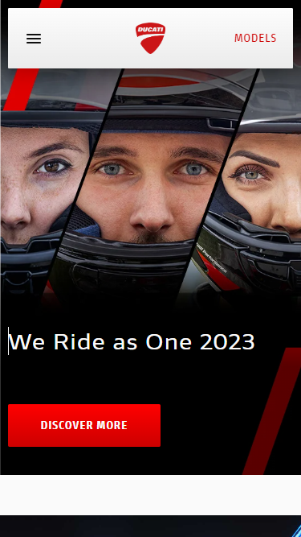
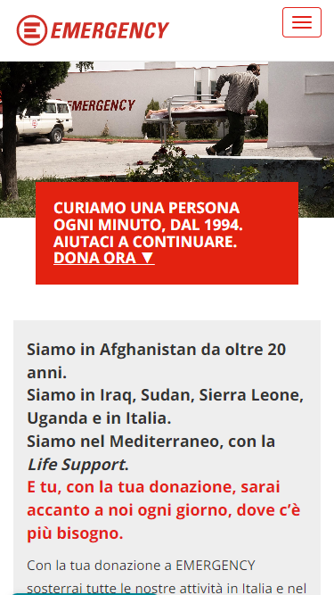

Rule of Thirds
Ducati
ducati.com I chose to use this homepage because Ducati exemplified the rule of thirds with the image they display here. As you can see, they not only divided the frame into 3 rows (menu on top, picture in the center, and text on the bottom) but by creating a sensation of dynamism using the black diagonal lines to divide the pictures. As soon as the viewer opens the website, his view is caught by the bikers' eyes. This is possible because the dark helmets are in contrast with the bright skins and the colorful bikers' eyes and skin. In conclusion, we can see that Ducati used two different principles on their website: - Rule of Thirds - Contrast
White Space and Clean Design
Coolors
coolors.com Coolors is a wonderful (and colorful) website I use every time I need inspiration about color pallets. I did use it even for this assignment. The website is very simple and eye-catching. I chose this website because the homepage is a perfect example of the white space principle. Not one element lay over the other one and each one of them has all the space it needs in order to receive the right attention from the viewer.
Alignment
armani.comArmani.com has a very clear and simple design. Each element in the webpage is centered on the page itself. Even the menu on top of the page stands in one line where every icon is centered horizontally to the other. The text on the buttons on the bottom page is centered on it.